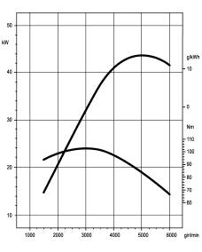
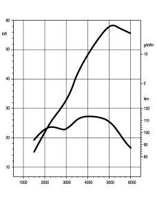
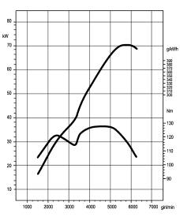
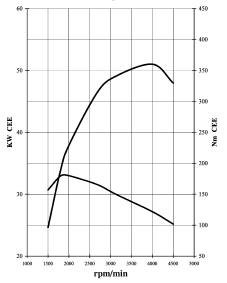

SPECIFICATIONS
- Path
- Technical Data > Project description and specifications > ENGINE TYPICAL CURVES > SPECIFICATIONS
- Kind
- technical data / specifications
- Applies to
- all engines; all production periods
- Interactive page
- https://sloeber94.github.io/elrnDB-lYpsln/en/#/2427693
Applies to: all engines; all production periods
The power and torque curves illustrated can be obtained with the engine overhauled and run in (50 hours' operation), without fan, with an exhaust silencer and air filter fitted, at sea level.
Applies to: all engines; all production periods
1.2 8v
Applies to: all engines; all production periods

Applies to: all engines; all production periods
1.2 16v
Applies to: all engines; all production periods

Applies to: all engines; all production periods
1.4 16v
Applies to: all engines; all production periods

Applies to: all engines; all production periods
1248 JTD
Applies to: all engines; all production periods
